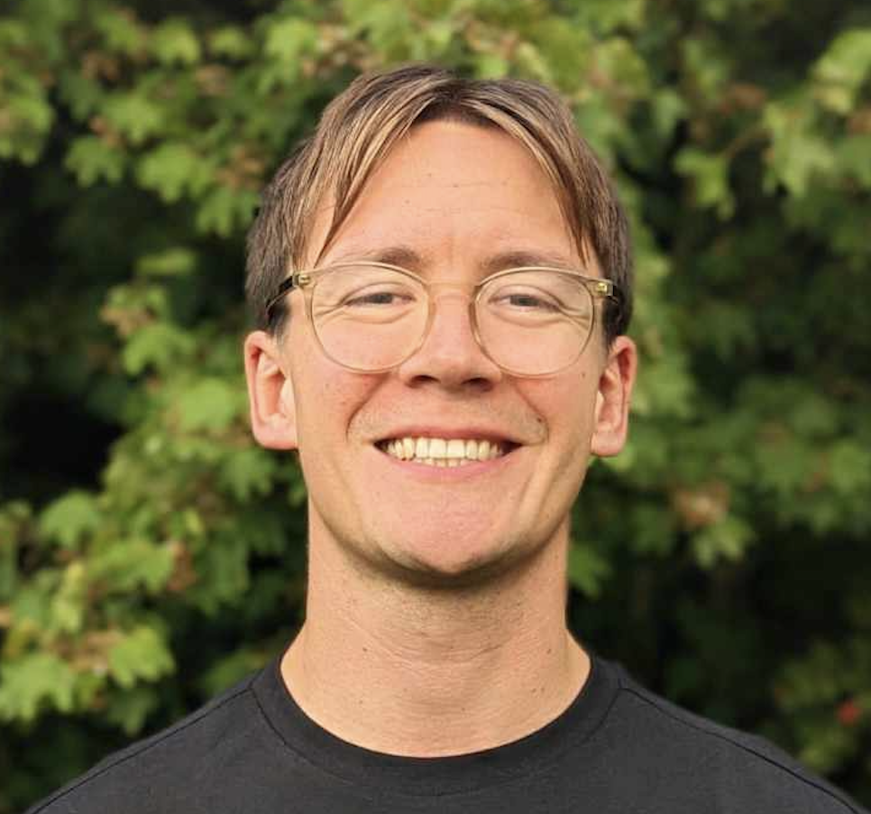
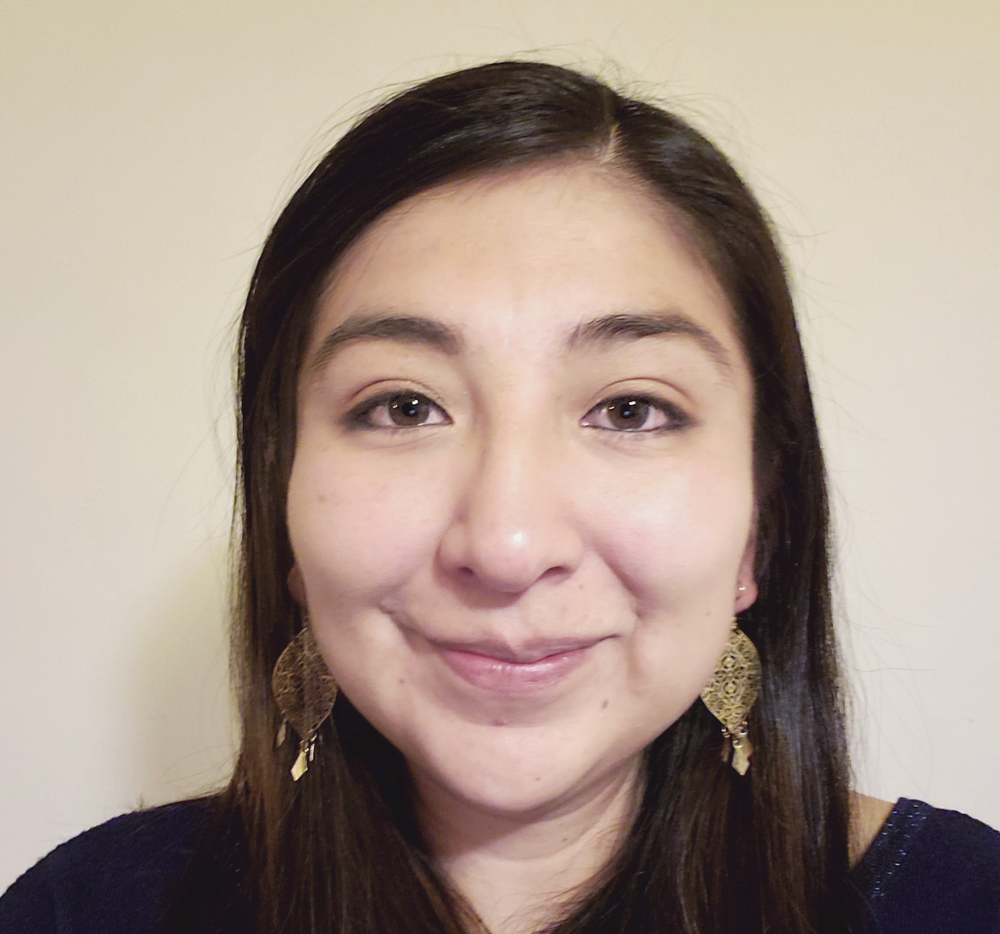
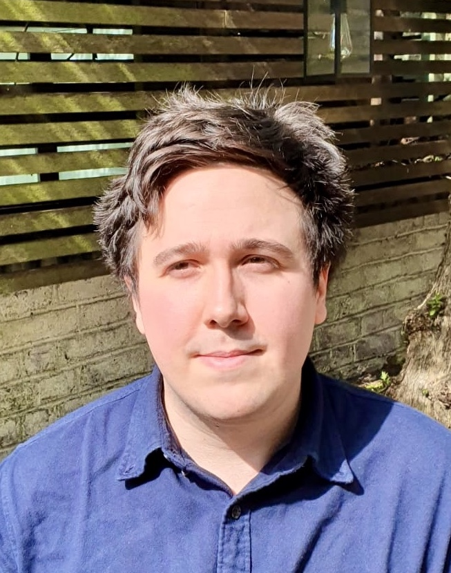
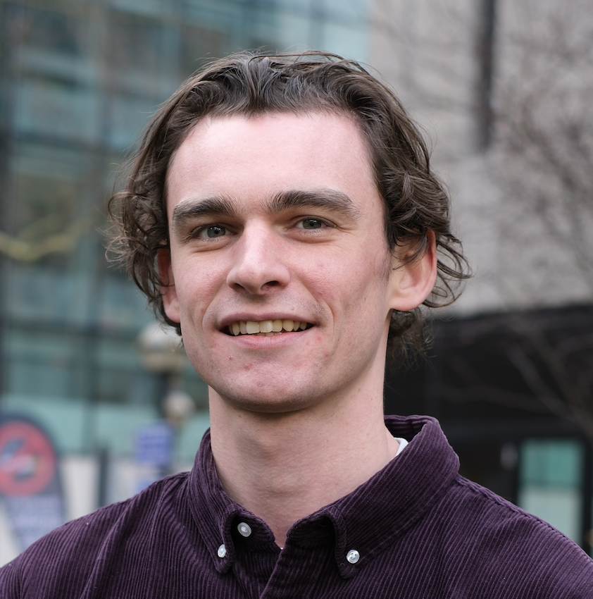

Dr Rike Becker
Researcher
Rike is a Research Associate and Marie-Sklodowska-Curie Fellowship holder at Imperial. She is studying climate change impacts on future water availability, particularly in mountain regions which are experiencing drastic changes in water availability due to accelerated snow and glacier melt.

Dr Simon De Stercke
Researcher
Dr Simon De Stercke's research focuses on hydrological modeling and water resources management, with particular expertise in uncertainty quantification and decision support systems.
Dr Fabian Drenkhan
Researcher
Dr Fabian Drenkhan specializes in climate change impacts on mountain hydrology, with extensive fieldwork experience in the Andes and expertise in glacier-fed watersheds.

Dr Ben Howard
Researcher
Ben is an environmental scientist with interdisciplinary research interests focussing on water, climate, and society. His research seeks to understand how socioenvironmental systems function and how they are changing, and ultimately what this means for the services, opportunities and risks they represent to society.
Dr Simon Moulds
Researcher
Dr Simon Moulds works on hydrological modeling and remote sensing applications, with a focus on understanding water resources in data-sparse environments.
Dr Boris Ochoa-Tocachi
Researcher
Dr Boris Ochoa-Tocachi is an expert in ecohydrology and ecosystem services, focusing on the role of natural infrastructure in water regulation and conservation.

Dr Estefania Quenta Herrera
Researcher
Estefania Quenta is a Postdoctoral Fellow at Imperial College London, broadly interested in how freshwater ecosystems respond to environmental changes to inform water conservation measures. She is currently investigating how climate change is reshaping water quality in the Andes through systematic assessments and numerical analyses.

Dr Tom Rowan
Research Fellow
Tom is a Research Fellow at Imperial College London, where he researches hydrological processes and contamination problems through the development of innovative instrumentation. His research advances environmental monitoring through AI-enhanced sensor networks that replace expensive traditional equipment with affordable, reliable alternatives.

Luke Tumelty
Innovation Manager
Luke is an Innovation Manager at Imperial College London where he works full time on the Floods and Droughts Research Infrastructure (FDRI) project: a 5-year capital investment by the UK Government, enabling essential science and innovation to improve the UK's resilience to hydrological extremes.
Dr Charles Zogheib
Researcher
Dr Charles Zogheib specializes in hydrological modeling and water resources assessment, with extensive experience in mountain hydrology and climate change impacts.